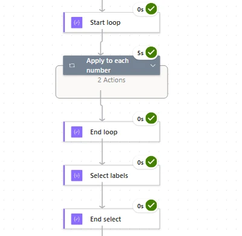
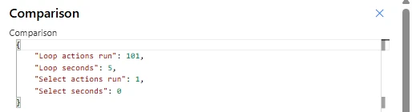

- Power Automate
- Level 5 · Performance and scale · 1 of 6
Request limits and how actions are counted
Power Automate doesn't charge per action, but it does count them. Each licence comes with a daily allowance of Power Platform requests. Flows that go over it for a long time get slowed down (throttled). Knowing how actions are counted is the first step to writing flows that scale.
How actions are counted
The rule from Microsoft's licensing FAQ is simple: every action that runs is one request, and that includes the loop itself. A loop with 2 actions inside that runs 10 times uses 1 + (2 × 10) = 21 requests. Triggers, conditions, Compose and variables all count too, not only connector calls.
The demo flow does the same job twice for 50 numbers: once with an Apply to each loop holding 2 actions, once with a single Select.


1 + (2 * 50) = 101| Piece | What it does |
|---|---|
1 | The Apply to each action itself. |
2 * 50 | Two actions inside the loop, run once for each of the 50 numbers. |
Select = 1 | Select transforms the whole array in a single action, however many items it has. |
The daily allowance
Allowances are per 24 hours and depend on the licence. At the time of writing, Microsoft's request limits page lists:
| Licence | Requests per 24 hours |
|---|---|
| Power Automate Premium (per user) | 40,000, shared by all of that user's flows |
| Power Automate Process (per flow) | 250,000 for the flow it is assigned to |
| Users without a standalone licence (for example Microsoft 365 only) | Lower allowance; check the official page |
Numbers change, so always check the request limits page before you plan capacity. Desktop flow steps run on a machine and don't use these requests.
New to this? Start from the basics optional
Request: one action run. A connector call, a Compose, a variable update and a loop are all one request each.
Throttling: when a flow uses far more than its allowance, Power Automate slows it down instead of stopping it. Runs take longer and may time out.
Allowance: the number of requests a licence gives per 24 hours.
Build it step by step optional
- Open a busy flow's run and count the actions in each loop.
- Multiply by the number of items the loop usually handles, and add the actions outside loops.
- Multiply by the number of runs per day. That is the flow's daily request use.
- Compare it with the owner's allowance. If it is close, replace loops with Select, Filter array or a single bulk call.
- Use the Analytics page on the flow, or the Power Platform admin center, to watch actual usage.
Common mistakes
- Thinking only connector calls count. A Compose or Set variable inside a loop counts on every pass.
- Polling with a short recurrence (every minute) when a trigger that fires on change would do.
- Running many heavy flows under one person's account. They all share that one user's allowance.